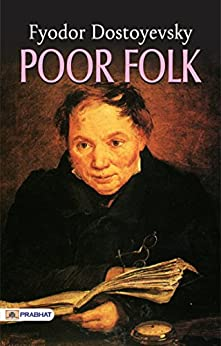
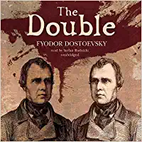
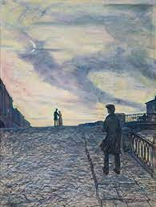
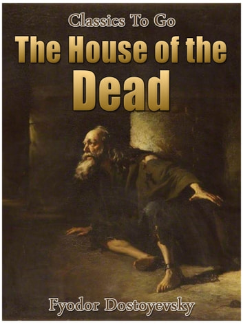
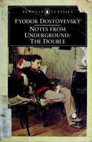
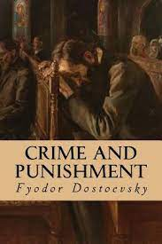
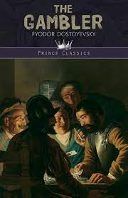
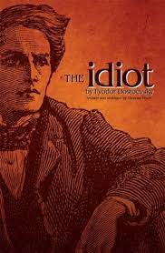
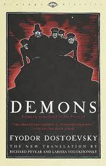
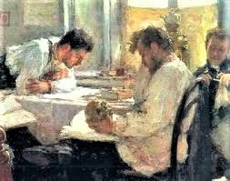

بهراستی چه زمانی است که بیچارگی و درماندگی آدمها را به لبه مرگ میکشاند؟ چه بر سر زندگی آدمها میآید که مرگ را بر زندگی ترجیح میدهند؟ این احساس و این نوع از درماندگی همان جنسی است که داستایوفسکی در اولین اثرش بهنام «بیچارگان» آن را شرح داده است، آن هم با قلمی بسیار گیرا و با داستانی متفاوت و جذاب. این رمان در واقع نامههای مردی به همسرش است؛ همسری که همسن دخترش است. این نامهها، که هیچکدام بیجواب نماندهاند، ساختار اصلی رمان را شکل دادهاند. سیر داستان بیان غمها و دلزدگیهای این دو نفر است. این رمان آنقدر عمیق و تکاندهنده است که مخاطب، ضمن اینکه با کتاب ارتباط میگیرد، عمیقا تحتتأثیر فضای داستان قرار میگیرد.
رمان همزاد یکی دیگر از کتاب های داستایوفسکی است که داستان عشق کارمندی ساده به دختر فردی ثروتمند است، عاشقانهای رمزآلود و جذاب. شاید ورود رقیب کارمند ساده به قصه هم یکی از علتهای اصلی جذابیت این رمان باشد. اگر شما هم عاشق چنین رمانهایی هستید، آن هم نوشته نویسندهای بزرگ چون داستایوفسکی، حتما رمان همزاد را بخوانید؛ چراکه با شکل زیبایی از عشق و هراس در دنیای روسها آشنا خواهید شد.
رؤیاپردازی و بازهم خلاف عادت نوشتن. شب های روشن داستایوفسکی یکی از رمانهای معروف اوست که روایتگر رؤیاپردازیهای جسورانه یک جوان است. اگر با زندگی داستایوفسکی آشنا باشید، میدانید که بهنوعی این رؤیاپردازیها مخلوق ذهن خودش و در زندگی واقعی خودش هستند. شب های روشن داستایوفسکی رؤیاهای پسر جوانی است که تنها زندگی کرده و در این تنهایی، با شهر دوست شده. با درودیوار شهر، با تاروپود آن ارتباط میگیرد و گویی هیچکس چون او با ذات شهر پترزبورگ آشنا نیست. این کتاب انتخاب خوبی برای علاقهمندان به قصههای عاشقانه و آرام است. در مسیر خواندن این رمان، اوج هیجان را در کنار آرامشی مثالزدنی تجربه خواهید کرد.
چرا خاطرات خانه مردگان؟ این کتاب جالب بخشی از زندگی شخصی داستایوفسکی است. دورانی که او و دوستانش بهجرم شرکت در جنبشی به اعدام محکوم شدند، به محل اعدام اعزام شدند و در طی مراسمی نمایشی در لحظه آخر بخشیده شدند تا فقط آنها را ترسانده باشند. سپس به زندان منتقل شدند و مدتها در آنجا ماندند. زندگی بسیار سخت و طاقتفرسای آن سالها را در کتاب خاطرات خانه مردگان میخوانیم. رمانی پر از وحشت و واقعیتهای نگرانکننده ولی ملایم و نرم، که آن هم هنر نویسنده قهار آن است که چنین موضوعی را تا این حد زیبا و جذاب نوشته است. برای شناخت بیشتر داستایوفسکی و آنچه در آن سالها به سرش آمده است، میتوانید این کتاب خوب را بخوانید.
کتابی بسیار متفاوت. شاید بهتر باشد بگوییم که برای وصف یادداشت های زیرزمینی داستایوفسکی فقط باید آن را خواند! البته توصیف مترجم این کتاب متفاوت، یعنی حمیدرضا آتشبرآب هم بسیار خواندنی و جالب است: «آقایان! خانمها! گوش کنید! شما یکی از دشوارترین، دراماتیکترین و غیرقابلهضمترین رمانها را در دست دارید. اکنون چیزی بیش از ۱۵۰ سال از نگارش این اثر میگذرد، نخستین رمان تکگویی درونی و اولین جریان صدای وجدان که تاریخ ادبیات به خاطر میآورد. حتی پیش از ولوله جوشانِ جیمز جویس، ایتالو ازوو، روبرت موزیل، آلفرد دولبین و ژان پل سارتر. این رمان تسلایی اندک است که انسانهای باهوش را به هیچ نمیرساند، اما دیوانهها با آن حتما به جایی میرسند. دُزِ بسیار قوی و کشندهای دارد و برای بسیاری همان بهتر که هرگز آن را تورق نکنند.»
گرش واقعی داستایوفسکی به موضع کشورش روسیه است. این کتاب به راهحل او برای نجات روسیه از چنگال نهیلیسم اشاره دارد و در خلال داستان، از صدای وجدان آدمی صحبت میکند. در این کتاب، با اتفاقات زنجیروار و پیچیدهای روبهرو میشویم که کاملا در تاروپود هم قرار دارند. این رمان قهرمانان و افراد شرور بسیاری را محک میزند؛ ولی بسیار جالب توجه است که رویکرد رمان طوری برنامهریزی شده که نه قهرمانان را بیعیب معرفی میکند و نه شرورها و گناهکاران را غیرقابل درک و بخشش! شاید بد نباشد اگر این کتاب خاص و جذاب را بخوانید و دنیای متفاوتی را با این نویسنده ماهر تجربه کنید.
بازهم کتابی تودرتو اما بههمپیوسته و قابللمس برای مخاطب ماجراجو! ایوانویچ، معلم سرخانه بچههای ژنرالی روسی، در طی رفتوآمدهایش عاشق نادختری این ژنرال میشود. از طرفی، این ژنرال ورشکسته میشود و بدهی بسیاری بالا میآورد و تنها امیدش ارث مادربزرگش است. در رمان قمارباز نیز با لایههای داستانی متفاوت و با شخصیتهای بسیاری آشنا میشویم. هیچچیز طبق پیشبینی مخاطب پیش نمیرود و کلی اتفاقات هیجانانگیز در این رمان رخ میدهد، از عشق مادربزرگ به شخص قمارباز گرفته تا حس صادقانه یک معلم به دختری جوان. اگر شما هم عاشق ماجراهای هیجانانگیز هستید، این کتاب را از دست ندهید. بسیاری آن را سرگذشت خود داستایوفسکی میدانند.
توصیف تکتک لحظات اعدام یک فرد شاهکاری است که در کتاب ابله به حقیقت پیوسته است. آنقدر فضای این رمان حقیقی و ظریف است که خواننده آن سخت میتواند به دنیای واقعی خارج از کتاب برگردد! در این کتاب، اثر تصمیم یک فرد بر سرنوشت جامعه اطرافش را بهخوبی احساس میکنیم و به ابعاد روانشناختی عمیقی از زبان شخصیت اصلی رمان سفر میکنیم؛ آن هم با همراهشدن با زندگی آخرین بازمانده خاندانی اصیل که مجبور است شرایط زندگی بسیار متفاوتی را تجربه کند. کل این رمان رمز و هیجان است. منتها نه آنقدر که بهسختی بتوان ارتباطات را پیدا کرد. آنقدر صریح که لحظهای از ماجرا گسسته نمیشویم و آنقدر هنرمندانه که حتی یک حرکت بعدی هم برای مخاطب پیشبینیکردنی نیست!
داستان مردمانی که تلاش میکنند زندگی موفقی داشته باشند، اما هنر زندگی اجتماعی را نمیدانند و همین باعث میشود خودبهخود دنیایشان را نابود سازند. این رمان روایت اتفاقی واقعی است و داستایوفسکی با هنر نویسندگیاش آن را بهزیبایی هرچهتمامتر ساخته و پرداخته است. در پشت جلد این کتاب آمده است: «شیاطین همیشه در جسم آن قربانی که در آن حلول کردهاند باقی نمیمانند. خدا بیدار است و روزی خواهد رسید که این انبوه درهم شوریده شیاطین درهم رانده شوند و در جسم خوکها حلول کنند، و خوکان دیوانهوار در دریاچه فرو افتند.» اگر شما هم به مباحث تاریخی و اجتماعی علاقهمندید، حتما این کتاب ویژه را در برنامه مطالعاتی خودتان قرار دهید. بدون شک از آن لذت خواهید برد.
آخرین اثر داستایوفسکی، که طرفداران او میدانند اثر متفاوتی است. عشقی واقعی و حقیقی. در کنار تمام ضعفها و نقصها، بهمعنای واقعی دوستداشتنی. آلکسی فیودورویچ قهرمان داستان برادران کارامازوف معرفی میشود. منتها در ابتدای رمان اشاره میشود آلکسی فیودورویچ فرد بزرگواری نیست. مخاطب از همان ابتدا با این چالش روبهرو میشود که چطور کسی که میدانیم بهترین نیست قهرمان این رمان شده است؟ اگر شما هم دوست دارید با این داستان عاشقانه و ترسناک همراه شوید، حتما خواندن این کتاب را در برنامه خود قرار دهید.
